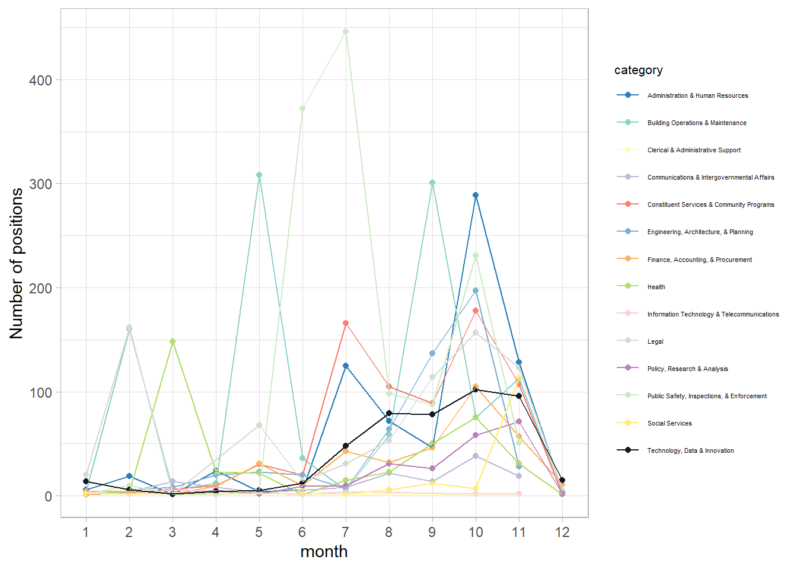
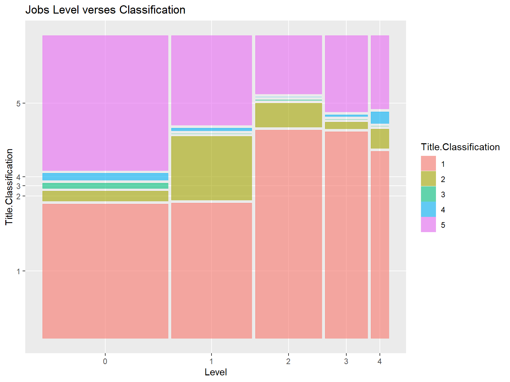
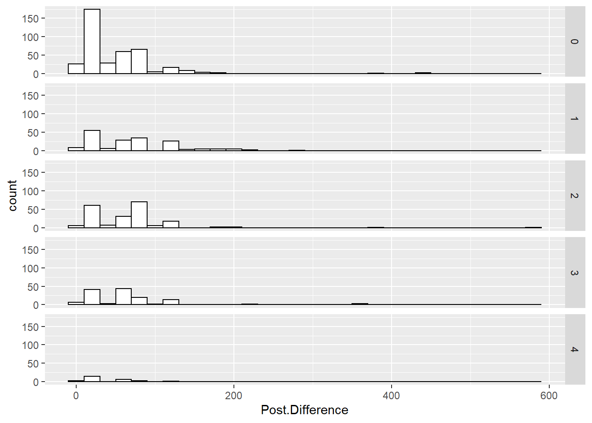

Chapter 5 Results
5.1 Job openings
One of the most frequently asked questions about the employment is that what are the most in-demanding jobs. In this dataset, each record includes the details about the concrete business title, job Category and corresponding career level of this job. We aim to provide some insights about the trend of New York City official jobs.
5.1.1 The most in-demanding job categories.
The occupational group in which the posted job belongs, such as: Administration & Human Resources,Communications & Intergovernmental Affairs,Constituent Services & Community Programs ,Engineering, Architecture, & Planning,Finance, Accounting, & Procurement ,Health, Technology, Data & Innovation, Legal Affairs,Building Operations & Maintenance,Policy, Research & Analysis,Public Safety, Inspections, & Enforcement,Social Services,Information Technology & Telecommunications.
We divided each job into its corresponding category and examined the number of released job opportunities of each category.
5.1.2 The top 25 in-demanding business title
In this section, we set our sight on the specific business title. By analyzing this, we try to dig out what kind of skills and roles are most needed by New York City service.
5.1.3 Which career leavel is mostly need in each Category
5.1.4 What are the month trends of job openings

5.2 Job features
In the dataset, each job post is categorized by two factor, Title Classification and Level. While classification represented by a number : Competitive - 1, Pending Classification - 2, Labor - 3, Exempt - 4 and Non-Competitive - 5 and higher leveling higher position in the agency structure.

Viewing data on level difference, we can see that among all level of jobs, labor and exempt title is quite small in amount. This could be related to the fact this data is collected by government agency focusing on goverment hiring, which indeed need less pure-labor worker than office workers.
5.2.1 Lower level job titles
On level 0 which represent part-time jobs, the competitive jobs and non-competitive jobs are almost even, this could be the fact that part-time worker is needed among all positions, creating a balanced distribution. On level 1 representing interns, the competitive jobs remains the same portion while unclassified jobs increase dramatically. This could be the nature of interns which newcomers are not fulling integrated in the agency’s system, thus creating lots of unclassified jobs.
5.2.2 higher level job titles
On level 2-4 the competitive portion is significantly higher than lower level jobs. This indicate a competition intensive job environment in government agency, no matter mid to low lever full-time workers or higher level managment workser, they all have high competitive job percentage. Level 4 however do have a slightly lower competitve level compared to level 2 and 3, marking the highest managing works are less competitive. This could because of that level 4 jobs are rare and not much people are qualified and applied to those jobs.
Viewing from another perspective, we can see competitive positions - 5 are packed in level 0 jobs while non-competitive positions are evenly distributed among different levels except level 4. Unclassified titles are mostly in level 1 which is interns. This is mostly consistent with previous findings.
One other important factor people concerning when looking for jobs is the income. Different salary might affect people’s willing to apply for the job. Here we look into the salary column of the dataset.
5.2.3 Distribution of salary
There’s three different kind of salary frequency: Annual, Daily and Hourly. Since Daily salary is few in number (24 entries), it is omitted in this analysis.
5.2.3.1 Annual salary
This is a histogram of the expected salary each job position is willing to pay annually. The red line indicates the mean value of all values, and the blue line indicates the 50% AMI(Area Median Income) of a 5-person family in NYC. (Source: https://www1.nyc.gov/site/hpd/services-and-information/area-median-income.page) According to the agency giving this data, the value left of the blue line indicate “Very-Low-Income”.
We can see in this graph that the expected salary is left-skewed distributed. This is normal since in an agency, there’s always more low-level worker than high-level workers. The mean value of all salary is higher than the “Low income line”, but not much. Most of the job positions still have around the 64450 dollars of annual income for a five people family, which is the blue line.
Overall, the annual salary is quite balanced but realtivly low compared to the area income level.
5.2.3.2 Hourly salary
This is the histogram of expected salary of hourly paid job positions. The red line is the mean, and the blue line is the 50% AMI in NYC (source: https://www.ziprecruiter.com/Salaries/Hourly-Salary--in-New-York). We can see that dispite being spreaded widely, a huge amount of hourly paid job receive a very low hourly salary of 18 dollars. There’s also some highly paid jobs increasing the mean, but compared to the large quantity they look more like outliers.
5.3 Job filling and posting time
There’s two column in the dataset recording posting date and withdrawn date of each job posting. A job posting will only withdraw when it can’t find enough people to fill the positions. These two date records a time span of each job posting.
5.3.1 Salary over job filling and level
This is mean annual salary in groups of job level and the status of filling or not. We can see that the distribution of filled (TRUE column) job postions is generally higher than the unfilled ones, showing that salary do affect people’s willingness of applying for a job. It also show there’s generally more filled jobs than unfilled, and the salary increases as level increases.
5.3.2 Unfilled jobs’ waiting date

This is the number of waiting date until a job position is withdrawn without being filled. There isn’t much difference among different level of jobs, all jobs have a span of 10-30 days waiting time. The second large waiting span is 70-90 days waiting and the third is 50-70 days of waiting. This indicate an agency normally wait either one month or three month for a job postion to be filled before they withdraw.